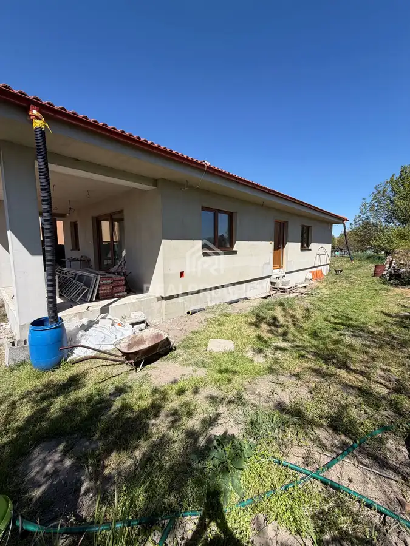
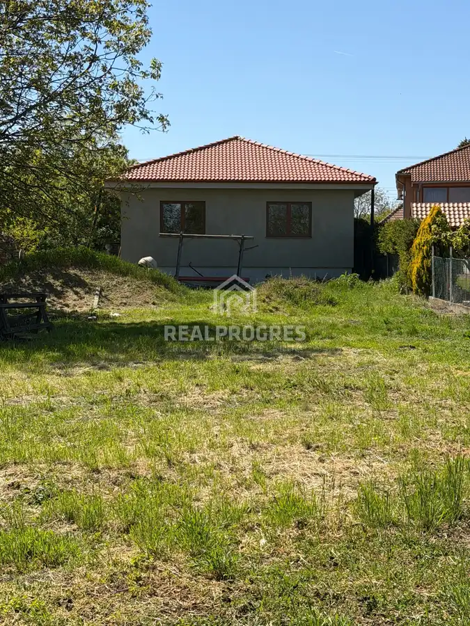
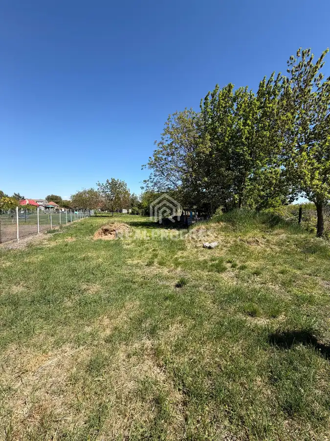
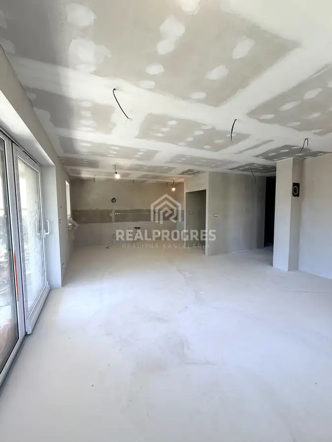
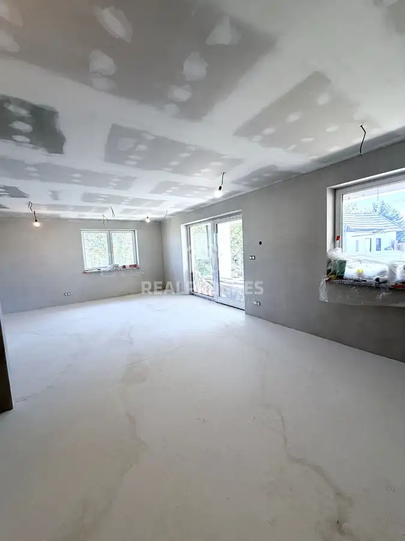
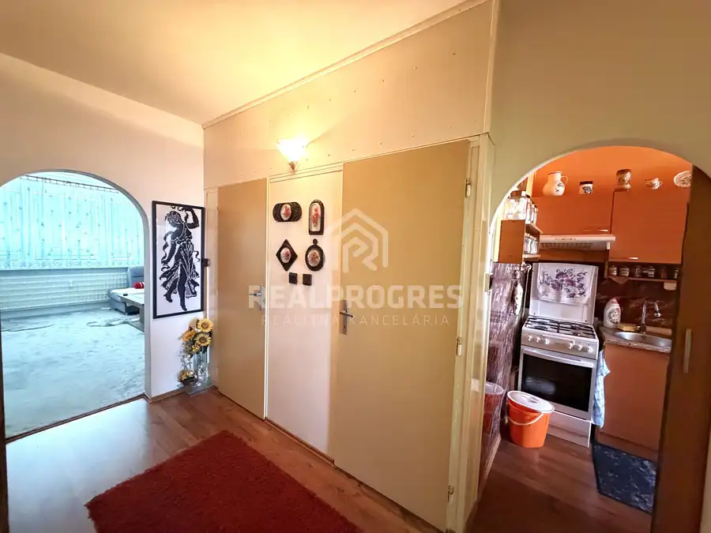
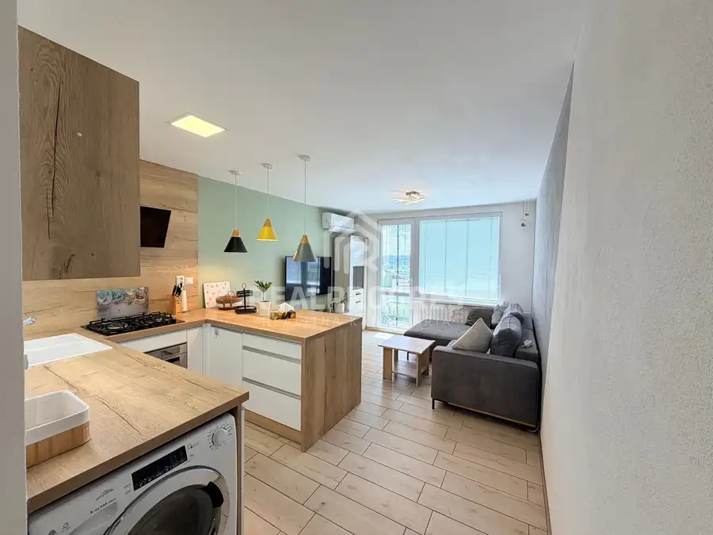
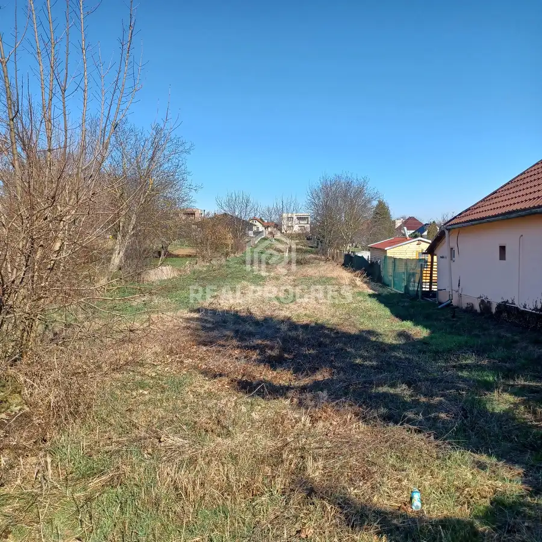

Predaj rodinný dom pri Nitre obec Černík
Černík





- Plocha121.62 m²
- StavVo výstavbe
O nehnuteľnosti
Predstavte si miesto, kde si každý detail vytvoríte presne podľa seba. Dom, ktorý nie je len nehnuteľnosťou, ale priestorom pre vaše sny, predstavy a nový začiatok.Tento rodinný dom v stave holodom vám dáva jedinečnú príležitosť dokončiť si interiér podľa vlastného štýlu – od podláh, cez kuchyňu až po posledný detail, ktorý z neho spraví skutočný domov.Svetlé a vzdušné priestory, zaplavené denným svetlom, vytvárajú príjemnú atmosféru, ktorú si zamilujete už pri prvom pohľade. Každá miestnosť je pripravená stať sa presne tým, čo potrebujete – útulnou obývačkou, pokojnou spálňou či miestom pre rodinné chvíle.Vytvorte si bývanie, ktoré bude odrážať váš štýl, vaše potreby a váš život.Interiér domu je pripravený na dokončenie – farby, stropy a rozvody sú hotové, pričom finálne prvky ako podlahy, interiérové dvere, kuchynská linka či kúpeľňa si môže budúci majiteľ zvoliť podľa vlastného štýlu.Vďaka tomuto riešeniu získavate:•možnosť realizovať vlastný dizajn bez kompromisov •kontrolu nad použitými materiálmi a kvalitou •bývanie „na mieru bez nutnosti prerábania hotového interiéru Dom pôsobí vzdušne a svetlo, s dostatkom prirodzeného denného svetla, čo vytvára príjemnú atmosféru pre budúce bývanie.Ak hľadáte nehnuteľnosť, ktorú si môžete dokončiť presne podľa seba, tento dom je ideálnou voľbou.Novostavba je jednopodlažná bez obytného podkrovia.- určený na bývanie 4- 5 člennej rodiny - celkový pôdorys z rozmermi 18mx 9m s terasou a vstupom Zastavaná plocha : 135m2Užitková plocha : 121,62m2Terasa : 24m2Vstup : 3m2Pozemok o výmere 1629m2, šírka 14mPoužité materiály : - pórobetónové tvárnice Ytong - krytina -Terran Danubia - okná plastové s izolačným trojsklom - vchodové dvere plastové - podlahové teplovodné kúrenie, doplnené krbovou vložkou Stavba bude napojená na inžinierske siete - Elektrická prípojka - Vodovodná prípojka - Plynová prípojka - Kanalizačná prípojka na navrhovanú žumpa 15m2- vlastná studňa CENA: 235 000 €↓↓↓BLIŽŠIE INFORMÁCIE DOHODY A NÁVRHY VÁM RADI ZODPOVIEME NA DOHODNUTEJ OBHLIADKEBENEFITY PRE VÁS NA JEDNOM MIESTE S NAJLEPŠÍMI PODMIENKAMIINFORMÁCIE↓↓↓Realitný maklér : Margita ŠinčokováTel.kontakt : 0948 434 787Mail : sincokova@realprogres.sk- Autorizácia zmlúv zabezpečená advokátskou kanceláriou- Určenie všeobecnej hodnoty nehnuteľnosti- Zabezpečenie znaleckého posudku- Hypotéka a poistenie s hypotekárnym špecialistom s dlhoročnými skúsenosťami- Inžinierska činnosť
Parametre
- Druh
- Rodinný dom
- Dátum zverejnenia
- 30. 04. 2026
- Energetický certifikát budovy
- nie je
- Plocha pozemku
- 1629 m²
- Podpivničenie
- Nedostupné
- Počet izieb / miestností
- 4
- Počet nadzemných podlaží
- 1
- Prístupová komunikácia
- Asfaltová
- Rok výstavby
- 2021
- Stav nehnuteľnosti
- Vo výstavbe
- Terén pozemku
- Rovinatý
- Typ
- Predaj
- Typ konštrukcie
- Tehlová
- Vybavenie
- Špajza
- Vybavenie objektu
- Holopriestor
- Vykurovanie
- Ústredné
- Zariadenie
- Nezariadené
- Zastavaná plocha
- 135 m²
- Úžitková plocha
- 121.62 m²
- Šírka pozemku
- 14
Kde to je


Mohlo by Vás zaujímať

BytNové 114 500 €PREDAJ 3 izbový byt s loggiou v Zlatých Moravciach Zlaté Moravce 3-izbový61.37 m²7. podlažie
BytNové 153 000 €Predaj veľký 1izbový byt balkón ,klimtizacia, pivnica v Nitre Nitra 1-izbový47.22 m²10. podlažie
PozemokNové Cena na vyžádáníNa predaj slnečný stavebný pozemok 1 109 m² – Cabaj-Čápor Cabaj-Čápor 1109 m²